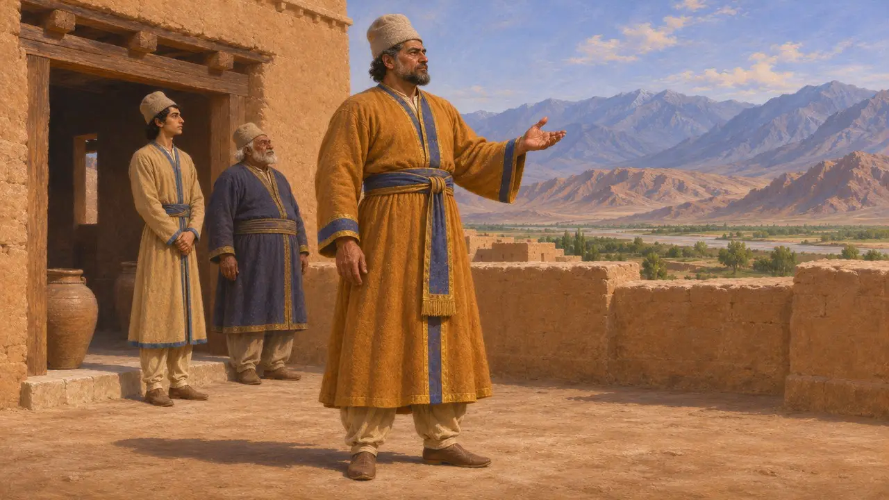
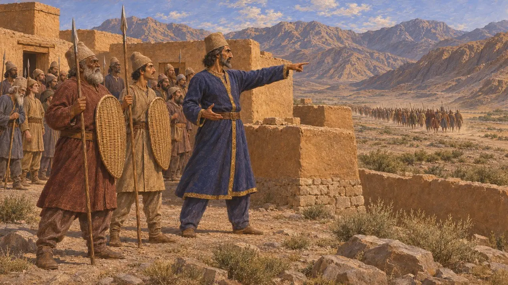
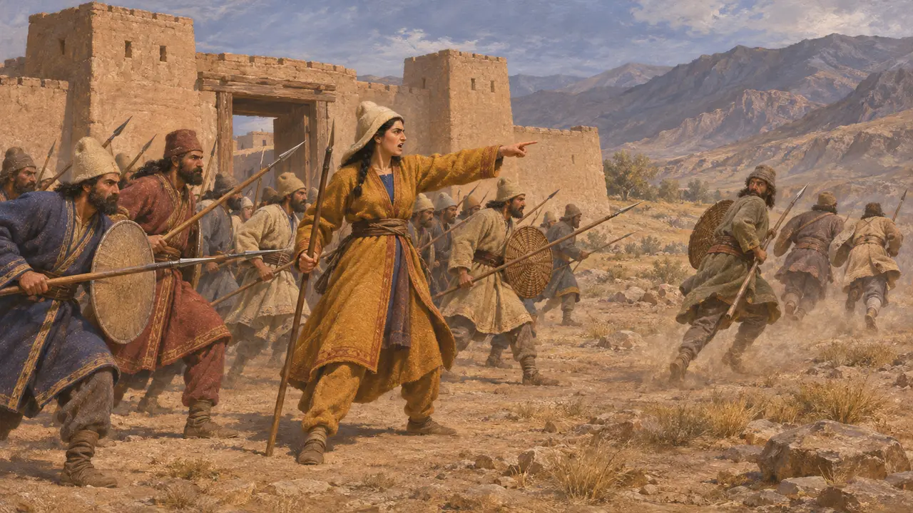
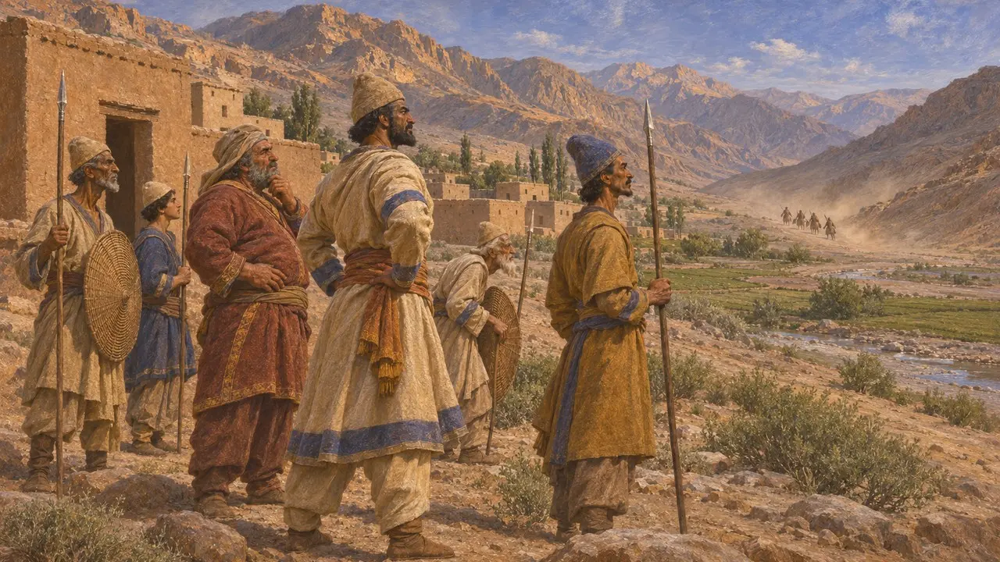

Вивана
Сатрап Арахосии при Дарии, сражавшийся там с мятежным войском, около 521 г. до н. э.
Вивана был персидским наместником Арахосии, на территории нынешнего южного Афганистана, в первые годы царствования Дария. Он известен по Бехистунской надписи, которая называет его слугой и сатрапом Дария в этой области и рассказывает о его борьбе с мятежным войском. Этот эпизод показывает, что восстания 522–521 годов до н. э. дошли до дальнего востока державы.
В игре: Игра упоминает Вивану в бехистунских записях Летописи и в статьях Энциклопедии о событиях, но не в отдельном уровне, и механики у него нет. Игра сообщает, что он разбил войско Вахьяздаты в Арахосии, что соответствует рассказу самого Дария.

Кем он был
Свидетельства эпохиБехистунская надпись называет Вивану персом и слугой Дария и сообщает, что Дарий сделал его сатрапом в Арахосии. О его семье и дальнейшей судьбе она ничего не говорит. Всё достоверное о нём известно из нескольких строк в собственном рассказе Дария о мятежах.
DB §§ on Arachosia (Old Persian column 3)

Мятеж Вахьяздаты
Свидетельства эпохиВахьяздата, перс, выдавал себя за Бардию, брата царя, и поднял Персиду на мятеж. Дарий говорит, что послал против него войско под начальством перса Артавардии. После поражения Вахьяздаты в Персиде, по словам Дария, он отправил отряд в Арахосию против Вивана. Дарий представляет всё это дело как козни лжеца.
DB §§40-45

Бои в Арахосии
Свидетельства эпохиСогласно надписи, войско Вивана сразилось с мятежниками в двух битвах: у крепости под названием Капишаканиш и в области под названием Гандутава; Дарий сообщает, что победа осталась за его стороной. Текст указывает даты сражений по месяцам, но не называет численности участвовавших сил.
DB §§45-47

Насколько можно доверять этому рассказу
СпорныйТекст Дария сообщает лишь о персидских победах и был написан для оправдания его власти, поэтому истинный размах боёв проверить нельзя. Историки обычно видят в арахосийском походе свидетельство того, что мятеж, или враги Дария, добрались до восточных провинций, но надпись остаётся единственным источником об этом. Геродот не упоминает ни Вивану, ни эти бои.
P. Briant, From Cyrus to Alexander, 2002
Источники
- DB §§40-47
- P. Briant, From Cyrus to Alexander, 2002
- R. G. Kent, Old Persian: Grammar, Texts, Lexicon, 1953